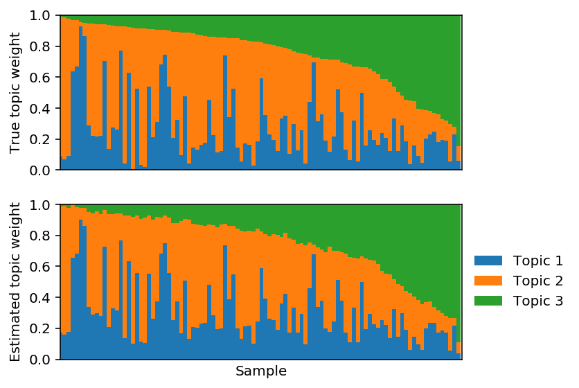

Paired factor analysis for single cell lineage tracing
Table of Contents
Introduction
Lineage tracing is the problem of assigning cells to a branching phylogeny of cell types. A number of approaches have been proposed to solve this problem (for a review, see Grün 2018).
Gao Wang and Kushal Dey proposed paired factor analysis (PFA) as a new solution to this problem. The intuition behind PFA is to cluster cells, under the constraint that each cell can belong to at most two clusters. Then, the cluster centroids are the nodes of the phylogenetic tree, and the cluster weights for each cell position that cell on a branch of the tree.
Here, we develop a fast, simple method to find a maximum likelihood solution to PFA.
Setup
import numpy as np import scipy.stats as st import scqtl import tensorflow as tf
%matplotlib inline %config InlineBackend.figure_formats = set(['retina']) import colorcet import matplotlib import matplotlib.pyplot as plt
Methods
Paired factor analysis
For modeling scRNA-seq count data, we start from Poisson factorization (PF):
\[ x_{ij} \sim \mathrm{Poisson}(\lambda_{ij}) \]
\[ \lambda_{ij} = [\mathbf{LF}]_{ij} \]
The PF MLE can be converted to a grade of membership model by normalizing to satisfy the constraints:
\[ l_{ik} \geq 0 \]
\[ \sum_i l_{ik} = 1 \]
\[ f_{kj} \geq 0 \]
After normalizing, the interpretation of the model is:
- \(f_{ik}\) is the centroid of cluster \(k\) (vector of mean expression)
- \(l_{ik}\) is the cluster weight of sample \(i\) on cluster \(k\).
In this model, sample \(i\) could potentially belong to all clusters. For lineage tracing, we instead model sample \(i\) as belonging to at most two clusters. Then, the interpretation is that sample loadings interpolate between reference points, which are factors.
We introduce latent indicator variables \(z_{ik}\), which denote whether sample \(i\) belongs to cluster \(k\).
\[ l_{ik} = \tilde{l}_{ik} z_{ik} \]
Now, we need to efficiently maximize the likelihood of the observed data and latent variables.
\[ \max_{\mathbf{L},\mathbf{F},\mathbf{Z}} \ln p(\mathbf{X} \mid \cdot) \]
\[ \mathrm{s.t.} \sum_k z_{ik} \leq 2\ \forall i \]
\[ z_{ik} \in \{0, 1\} \]
This is a mixed integer non-convex optimization problem.
EM algorithm
Given \(\mathbf{Z}, \mathbf{F}\), we can update \(\mathbf{L}\) using coordinate descent (Cichoki et al. 2009, Hsieh et al. 2011, Lin 2018).
Given \(\mathbf{L}\), we can update \(\mathbf{F}\) using a multiplicative update (Lee and Seung 2001).
Given \(\mathbf{L}, \mathbf{F}\), we can update \(\mathbf{Z}\):
\[ p(z_{ik} \mid \cdot) \propto p(x_{ik} \mid z_{ik}, \cdot) \]
Non-convex relaxation
We will relax the integer constraint to make the problem easier.
\[ \max_{\mathbf{L},\mathbf{F},\mathbf{Z}} \ln p(\mathbf{X} \mid \cdot) \]
\[ \mathrm{s.t.} \sum_k z_{ik} \leq 2\ \forall i \]
\[ 0 \leq z_{ik} \leq 1 \]
We can re-parameterize to drop one constraint:
\[ z_{ik} = \mathrm{sigmoid}(\tilde{z}_{ik}) \]
\[ \max_{\mathbf{L},\mathbf{F},\mathbf{\tilde{Z}}} \ln p(\mathbf{X} \mid \cdot) \]
\[ \mathrm{s.t.} \sum_k z_{ik} \leq 2\ \forall i \]
We can solve this problem using the barrier method.
\[ \max_{\mathbf{L},\mathbf{F},\mathbf{\tilde{Z}}} \ln p(\mathbf{X} \mid \cdot) + \alpha \sum_i \ln\left(2 - \sum_k z_{ik}\right) \]
This approach can be more readily generalized to more complicated likelihoods (NB, ZINB) through the use of automatic differentiation.
import tensorflow as tf def pois_llik(x, mean): return x * tf.log(mean) - mean - tf.lgamma(x + 1) def pfa(x, k, size, alpha=None, F=None, learning_rate=1e-2, max_epochs=10000, atol=1e-1, verbose=True): """Return paired factor analysis estimate :param x: array-like data ([n, p], tf.float32) :param k: number of factors :param size: size factor per observation :param alpha: increasing sequence of penalty weights (default: np.logspace(-1, 3, 10)) :param F: known factors :param learning_rate: base learning rate for RMSProp :param max_epochs: maximum number of iterations per penalty weight :param atol: absolute tolerance for convergence :param verbose: print objective function updates :returns loadings: Estimated sample loadings ([n, k]) :returns factors: Estimated factors ([k, p]) """ n, p = x.shape if alpha is None: alpha = np.logspace(-1, 3, 10) else: alpha = np.sort(np.atleast_1d(alpha).ravel()) graph = tf.Graph() with graph.as_default(): x = tf.Variable(x.astype(np.float32), trainable=False) size = tf.Variable(size.reshape(-1, 1).astype(np.float32), trainable=False) if F is not None: assert F.shape == (k, p) factors = tf.Variable(F.astype(np.float32), trainable=False) else: factors = tf.exp(tf.Variable(tf.random_normal([k, p]))) Z = tf.sigmoid(tf.Variable(tf.random_normal([n, k]))) Z /= tf.reduce_sum(Z, axis=1, keepdims=True) loadings = tf.exp(tf.Variable(tf.random_normal([n, k]))) weight = tf.placeholder(tf.float32, []) mean = size * tf.matmul(loadings, factors) llik = tf.reduce_sum(pois_llik(x, mean)) penalty = weight * tf.reduce_sum(tf.log(2 - tf.reduce_sum(Z, axis=1, keepdims=True))) loss = -llik - penalty optim = tf.train.RMSPropOptimizer(learning_rate=learning_rate) train = optim.minimize(loss) reset = tf.variables_initializer(optim.variables()) trace = [loss, weight, penalty] opt = [loadings, factors] obj = float('-inf') with tf.Session() as sess: sess.run(tf.global_variables_initializer()) for a in alpha: sess.run(reset) # Restart momentum for i in range(max_epochs): _, update = sess.run([train, trace], {weight: a}) if not np.isfinite(update[0]): raise tf.train.NanLossDuringTrainingError elif np.isclose(update[0], obj, atol=atol): break if verbose and not i % 500: print(i, *update, end='\r') if verbose: print(i, *update) return sess.run(opt)
\(l_1\) penalized PF
The preliminary simulation results suggest simply penalizing \(Z\) to be sparse could be sufficient to satisfy the relaxed constraint.
def pfa_l1(x, k, size, weight=None, learning_rate=1e-2, max_epochs=10000, atol=1e-1, verbose=True): """Return paired factor analysis estimate :param x: array-like data ([n, p], tf.float32) :param k: number of factors :param size: size factor per observation :param weight: l1 penalty weight :param F: known factors :param learning_rate: base learning rate for RMSProp :param max_epochs: maximum number of iterations per penalty weight :param atol: absolute tolerance for convergence :param verbose: print objective function updates :returns loadings: Estimated sample loadings ([n, k]) :returns factors: Estimated factors ([k, p]) """ n, p = x.shape graph = tf.Graph() with graph.as_default(): x = tf.Variable(x.astype(np.float32), trainable=False) size = tf.Variable(size.reshape(-1, 1).astype(np.float32), trainable=False) weight = tf.Variable(np.array(weight).astype(np.float32), trainable=False) if F is not None: assert F.shape == (k, p) factors = tf.Variable(F.astype(np.float32), trainable=False) else: factors = tf.exp(tf.Variable(tf.random_normal([k, p]))) Z = tf.sigmoid(tf.Variable(tf.random_normal([n, k]))) Z /= tf.reduce_sum(Z, axis=1, keepdims=True) loadings = tf.exp(tf.Variable(tf.random_normal([n, k]))) mean = size * tf.matmul(loadings, factors) llik = tf.reduce_sum(pois_llik(x, mean)) penalty = weight * tf.reduce_sum(Z) loss = -llik - penalty train = tf.train.RMSPropOptimizer(learning_rate=learning_rate).minimize(loss) trace = [loss, weight, penalty] opt = [loadings, factors] obj = float('-inf') with tf.Session() as sess: sess.run(tf.global_variables_initializer()) for i in range(max_epochs): _, update = sess.run([train, trace]) if not np.isfinite(update[0]): raise tf.train.NanLossDuringTrainingError elif np.isclose(update[0], obj, atol=atol): break if verbose and not i % 500: print(i, *update, end='\r') if verbose: print(i, *update) return sess.run(opt)
Plotting functions
Produce a STRUCTURE plot.
def plot_structure(weights, ax=None, idx=None): if ax is None: ax = plt.gca() prop = np.cumsum(weights, axis=1) if idx is None: idx = np.lexsort(weights.T) for i in range(prop.shape[1]): if i > 0: bot = prop[idx,i - 1] else: bot = None ax.bar(np.arange(prop.shape[0]), weights[idx,i], bottom=bot, color=f'C{i}', width=1, label=f'Topic {i + 1}') ax.set_xlim(0, weights.shape[0]) ax.set_xticks([]) ax.set_ylim(0, 1)
Plot estimated against true topics.
def plot_topics(topics, ax=None): if ax is None: ax = plt.gca() z = np.cumsum(topics, axis=1) for row in z: ax.bar()
Results
Simulation
Unconstrained Poisson factorization
Simulate some Poisson data.
np.random.seed(1) L = np.random.lognormal(size=(100, 3)) F = np.random.lognormal(size=(3, 10)) size = 100 * np.ones((L.shape[0], 1)) X = np.random.poisson(lam=size * L.dot(F)).astype(np.float32) topics = F / F.sum(axis=1, keepdims=True) weights = L * F.sum(axis=1) / size weights /= weights.sum(axis=1, keepdims=True)
Plot the pairwise correlation of the topics to each other.
plt.clf() plt.gcf().set_size_inches(3, 3) plt.imshow(np.corrcoef(topics), cmap=colorcet.cm['coolwarm'], vmin=-1, vmax=1) cb = plt.colorbar(shrink=0.5) cb.set_label('Correlation') plt.xlabel('True topic') plt.ylabel('True topic') plt.gcf().tight_layout()
Fix F and optimize L.
lhat, fhat = pfa(X, 3, alpha=0, F=F, size=size, learning_rate=1e-2) est_topics = fhat / fhat.sum(axis=1, keepdims=True) est_weights = lhat * fhat.sum(axis=1) / size est_weights /= est_weights.sum(axis=1, keepdims=True)
plt.clf() plt.set_cmap('Set2') fig, ax = plt.subplots(2, 1, sharex=True) fig.set_size_inches(6, 4) plot_structure(weights, ax=ax[0]) plot_structure(est_weights, ax=ax[1], idx=np.lexsort(weights.T)) ax[0].set_ylabel('True topic weight') ax[1].set_ylabel('Estimated topic weight') ax[1].set_xlabel('Sample') ax[1].legend(loc='center left', bbox_to_anchor=(1, .5), frameon=False) fig.tight_layout()
Fit PF. This is bi-convex, so we might not expect to recover \(\mathbf{L}, \mathbf{F}\).
lhat, fhat = pfa(X, 3, alpha=0, size=size, learning_rate=1e-3) est_topics = fhat / fhat.sum(axis=1, keepdims=True) est_weights = lhat * fhat.sum(axis=1) / size est_weights /= est_weights.sum(axis=1, keepdims=True)
Plot the pairwise correlation between the estimated topics and the true topics.
plt.clf() plt.gcf().set_size_inches(3, 3) plt.imshow(np.triu(np.corrcoef(F, fhat)), cmap=colorcet.cm['coolwarm'], vmin=-1, vmax=1) cb = plt.colorbar(shrink=0.5) cb.set_label('Correlation') plt.xticks(np.arange(6), ['True1', 'True2', 'True3', 'Est1', 'Est2', 'Est3'], rotation=90) plt.yticks(np.arange(6), ['True1', 'True2', 'True3', 'Est1', 'Est2', 'Est3']) plt.gcf().tight_layout()
Reorder the estimated topics to maximally correlate with the true topics.
est_weights = est_weights[:,np.argmax(np.corrcoef(F, fhat)[:3,3:], axis=1)]
Plot the corresponding topic model.

PFA model
Simulate some data where each sample interpolates between a pair of factors.
np.random.seed(1) L = np.random.lognormal(size=(100, 3)) F = np.random.lognormal(size=(3, 10)) Z = np.zeros(L.shape) for i in range(Z.shape[0]): Z[i,np.random.choice(3, size=2).astype(int)] = 1 L *= Z L /= L.sum(axis=1, keepdims=True) size = 100 * np.ones((L.shape[0], 1)) X = np.random.poisson(lam=size * L.dot(F)).astype(np.float32) topics = F / F.sum(axis=1, keepdims=True) weights = L * F.sum(axis=1) / size weights /= weights.sum(axis=1, keepdims=True)
Plot the pairwise correlation of the topics to each other.

Fix \(F\) and fit \(L\) using PF.
lhat, fhat = pfa(X, 3, alpha=0, F=F, size=size, max_epochs=10000, learning_rate=1e-2) est_topics = fhat / fhat.sum(axis=1, keepdims=True) est_weights = lhat * fhat.sum(axis=1) / size est_weights /= est_weights.sum(axis=1, keepdims=True)
Plot the corresponding topic models.

Fix \(F\) to the truth and fit \(L\) using PFA.
lhat, fhat = pfa(X, 3, alpha=1, F=F, size=size, max_epochs=10000, learning_rate=1e-2) est_topics = fhat / fhat.sum(axis=1, keepdims=True) est_weights = lhat * fhat.sum(axis=1) / size est_weights /= est_weights.sum(axis=1, keepdims=True)
Plot the corresponding topic models.

Project the solution onto the hard constraint.
est_weights[np.arange(est_weights.shape[0]),np.argmin(est_weights, axis=1)] = 0 est_weights /= est_weights.sum(axis=1, keepdims=True)
Plot the corresponding topic models.
Fit full PFA.
lhat, fhat = pfa(X, 3, size=size, alpha=np.logspace(-1, 8, 10), max_epochs=10000, learning_rate=1e-2) est_topics = fhat / fhat.sum(axis=1, keepdims=True) est_weights = lhat * fhat.sum(axis=1) / size est_weights /= est_weights.sum(axis=1, keepdims=True)
Plot the pairwise correlation between the estimated topics and the true topics.
plt.clf() plt.gcf().set_size_inches(3, 3) plt.imshow(np.triu(np.corrcoef(F, fhat)), cmap=colorcet.cm['coolwarm'], vmin=-1, vmax=1) plt.colorbar(shrink=0.5) plt.xticks(np.arange(6), ['True1', 'True2', 'True3', 'Est1', 'Est2', 'Est3'], rotation=90) plt.yticks(np.arange(6), ['True1', 'True2', 'True3', 'Est1', 'Est2', 'Est3']) plt.gcf().tight_layout()
Reorder the estimated topics to maximally correlate with the true topics.
est_weights = est_weights[:,np.argmax(np.corrcoef(F, fhat)[:3,3:], axis=1)]
Plot the corresponding topic models.
Project the solution onto the hard constraint.
est_weights[np.arange(est_weights.shape[0]),np.argmin(est_weights, axis=1)] = 0 est_weights /= est_weights.sum(axis=1, keepdims=True)

\(l_1\) penalized PF
Simulate data from PFA.
np.random.seed(1) L = np.random.lognormal(size=(100, 3)) F = np.random.lognormal(size=(3, 10)) Z = np.zeros(L.shape) for i in range(Z.shape[0]): Z[i,np.random.choice(3, size=2).astype(int)] = 1 L *= Z L /= L.sum(axis=1, keepdims=True) size = 100 * np.ones((L.shape[0], 1)) X = np.random.poisson(lam=size * L.dot(F)).astype(np.float32) topics = F / F.sum(axis=1, keepdims=True) weights = L * F.sum(axis=1) / size weights /= weights.sum(axis=1, keepdims=True)
Fit \(L\) using sparse PF.
lhat, fhat = pfa_l1(X, 3, weight=0., size=size, max_epochs=10000, learning_rate=1e-2) est_topics = fhat / fhat.sum(axis=1, keepdims=True) est_weights = lhat * fhat.sum(axis=1) / size est_weights /= est_weights.sum(axis=1, keepdims=True)
Reorder the estimated topics to maximally correlate with the true topics.
est_weights = est_weights[:,np.argmax(np.corrcoef(F, fhat)[:3,3:], axis=1)]
Plot the corresponding topic models.
Project the solution onto the hard constraint.
est_weights[np.arange(est_weights.shape[0]),np.argmin(est_weights, axis=1)] = 0 est_weights /= est_weights.sum(axis=1, keepdims=True)
Plot the corresponding topic models.
NB data
The preliminary results suggest that in the absence of extra-Poisson noise, ordinary PF gives a reasonable solution. Now, try simulating negative binomial data from PFA:
\[ x_{ij} \sim \mathrm{Poisson}(R_i \lambda_{ij}) \]
\[ \lambda_{ij} \sim [\mathbf{LF}]_{ij} u_{ij} \]
\[ u_{ij} \sim \mathrm{Gamma}(\phi_j^{-1}, \phi_j^{-1}) \]
Now, marginally \(x_{ij} \sim \mathrm{NB}(R_i \lambda_{ij}, \phi_j)\).
np.random.seed(1) L = np.random.lognormal(size=(100, 3)) F = np.random.lognormal(size=(3, 10)) Z = np.zeros(L.shape) for i in range(Z.shape[0]): Z[i,np.random.choice(3, size=2).astype(int)] = 1 L *= Z L /= L.sum(axis=1, keepdims=True) size = 100 * np.ones((L.shape[0], 1)) mu = size * L.dot(F) phi = np.random.lognormal(sigma=.1, size=(100, 1)) u = np.random.gamma(shape=phi, size=(100, 10)) X = np.random.poisson(lam=mu * u).astype(np.float32) topics = F / F.sum(axis=1, keepdims=True) weights = L * F.sum(axis=1) / size weights /= weights.sum(axis=1, keepdims=True)
Fix \(F\) and fit PF.
lhat, fhat = pfa(X, 3, alpha=0, F=F, size=size, learning_rate=1e-2) est_topics = fhat / fhat.sum(axis=1, keepdims=True) est_weights = lhat * fhat.sum(axis=1) / size est_weights /= est_weights.sum(axis=1, keepdims=True) est_weights = est_weights[:,np.argmax(np.corrcoef(F, fhat)[:3,3:], axis=1)]
Plot the corresponding topic models.
Fit PF.
lhat, fhat = pfa(X, 3, alpha=0, size=size, learning_rate=1e-2) est_topics = fhat / fhat.sum(axis=1, keepdims=True) est_weights = lhat * fhat.sum(axis=1) / size est_weights /= est_weights.sum(axis=1, keepdims=True) est_weights = est_weights[:,np.argmax(np.corrcoef(F, fhat)[:3,3:], axis=1)]
Plot the corresponding topic models.
Tabula Muris data
Tabula Muris (Tabula Muris consortium et al. 2018) has collected scRNA-seq from 20 murine tissues. In particular, they collected 53,760 FACS-sorted cells and 55,656 unsorted cells.
We can place the unsorted cells on lineages in two stages:
- Estimate 20 factors (mean vectors) from the FACS-sorted cells.
- Estimate PFA on the unsorted cells, using the fixed factors from (1).
Human embryoid body data
Han et al. 2018 study embryoid bodies (EBs) generated by allowing human pluripotent stem cells to spontaneously differentiate.